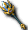

一般｜異常狀態防禦｜99魔王區獎勵道具｜天上－善屬性｜天上－惡屬性
迪姆萊特系｜雷歐加爾特｜斯科爾菲吉
名稱為橘色的是可以附魔的物品。另外，未鑑定名稱是該道具在未鑑定狀態下的名稱。
提供情報或編輯請求，請到情報提供公佈欄、編輯公佈欄。
一般
| 名稱 | 價格 | 限制 | 職業 | Wei | 取得方式 |
 修練用法杖 修練用法杖 | 1,000 | Lv0 | 戰修盜騎阿聖魔預吟 | 3 | Q:怪物圖鑑、 裝備彩券 裝備彩券 |
聖職者巡禮時使用的儀式用杖。本身沒有附魔任何力量
| 名稱 | 價格 | 限制 | 職業 | Wei | 取得方式 |
 祝福木杖 祝福木杖 | 10 | Lv0 | 戰修盜騎阿聖魔預吟 | 3 | Q:諾肯、 魔法棒、彩券 魔法棒、彩券 |
| 能力 | 攻8～12、WIS+2、HP+1%、MP+1%、SP+1% |
| 名稱 | 價格 | 限制 | 職業 | Wei | 取得方式 |
| 木杖 | 600 | Lv1 | 戰修盜騎阿聖魔預吟 | 3 | 米魯里斯：鐵匠、魔界村：鐵匠、魯克西翁：鐵匠、普羅布、奇奇、摩斯戰士、[摩斯戰士]、騎士哥布林、[騎士哥布林] |
| 能力 | 攻3～5、WIS+1 |
| 名稱 | 價格 | 限制 | 職業 | Wei | 取得方式 |
| 哥布林之杖 | 5,400 | Lv10 | 戰修盜騎阿聖魔預吟 | 3 | 米魯里斯：鐵匠、魔界村：鐵匠、魯克西翁：鐵匠、 哥布林、普羅德、摩斯戰士、波恩澤奇、庫納、 哥布林、普羅德、摩斯戰士、波恩澤奇、庫納、 小魔瓜 小魔瓜 |
| 能力 | 攻6～8、WIS+2 |
| 名稱 | 價格 | 限制 | 職業 | Wei | 取得方式 |
 聖職者之杖 聖職者之杖 | 5,000 | Lv15 | 戰修盜騎阿聖預吟 | 3 | |
| 能力 | 攻6～9、WIS+3、MP+5 |
| 名稱 | 價格 | 限制 | 職業 | Wei | 取得方式 |
| 治癒法杖未鑑定名稱：法杖 | 30,000 | Lv21 | 戰修盜騎阿聖魔預吟 | 4 | 波恩澤奇、 寶箱（深褐）、神之手、庫納、戈亞、小魔瓜 寶箱（深褐）、神之手、庫納、戈亞、小魔瓜 |
| 能力 | 攻8～10、WIS+2、HP+10、MP+20 |
| 名稱 | 價格 | 限制 | 職業 | Wei | 取得方式 |
| 連枷之杖 | 9,000 | Lv25 | 戰修盜騎阿聖預吟 | 3 | |
| 能力 | 攻7～9、WIS+3、MP+10 |
| 名稱 | 價格 | 限制 | 職業 | Wei | 取得方式 |
 領主之杖 領主之杖 | 75,000 | Lv25 | 戰修盜騎阿聖魔預吟 | 3 | 米魯里斯：鐵匠、卡雷瓦拉：鐵匠、萊貝雅：鐵匠、 阿英、Q:脫離新手裝備3-武器 阿英、Q:脫離新手裝備3-武器 |
| 能力 | 攻9～11、WIS+4 |
| 名稱 | 價格 | 限制 | 職業 | Wei | 取得方式 |
| 領主之杖 | 250,000 | Lv25 | 戰修盜騎阿聖魔預吟 | 8 | 裝備彩券、卡雷瓦拉森5的、 伐木諾肯 伐木諾肯 |
| 能力 | 攻9～11、WIS+4 |
| 名稱 | 價格 | 限制 | 職業 | Wei | 取得方式 |
| 迪坎法杖未鑑定名稱：法杖 | 52,000 | Lv30 | 戰修盜騎阿聖魔預吟 | 4 | 巴吉、阿英、寶箱（淺褐） |
| 能力 | 攻10～11、WIS+2、HP+10、MP+30 |
| 名稱 | 價格 | 限制 | 職業 | Wei | 取得方式 |
| 喪失的祈願 | 31,000 | Lv31 | 戰修盜騎阿聖魔預吟 | 3 | |
| 能力 | 攻10～12、WIS+4 |
| 備註 | 死亡時掉落地面 |
| 名稱 | 價格 | 限制 | 職業 | Wei | 取得方式 |
| 遺忘的祈願 | 31,000 | Lv31 | 戰修盜騎阿聖魔預吟 | 3 | 伊卡洛斯：鐵匠、公會城內NPC |
| 能力 | 攻13～15、WIS+4 |
| 備註 | 死亡時消失 |
| 名稱 | 價格 | 限制 | 職業 | Wei | 取得方式 |
 死靈法杖未鑑定名稱：法杖 死靈法杖未鑑定名稱：法杖 | 890,000 | Lv31,FLv20 | 戰修盜騎阿聖魔預吟 | 19 | 裝備彩券 |
攻15～16
參考：用於邪教儀式的杖(標示上只有聖)
| 名稱 | 價格 | 限制 | 職業 | Wei | 取得方式 |
 肯比歐斯法杖(舊) 肯比歐斯法杖(舊) | 890,000 | Lv31,FLv21 | 戰修盜騎阿聖魔預吟 | 9 | 絕版 |
| 能力 | 攻10～12隨機(BaseDAM+19～21、WIS+4～5、HP+47～49、MP+84～95) |
| 名稱 | 價格 | 限制 | 職業 | Wei | 取得方式 |
 治療者之杖 治療者之杖 | 30,000 | Lv43 | 戰修盜騎阿聖魔預吟 | 3 | |
| 能力 | 攻10～12、WIS+4、MP+20 |
| 名稱 | 價格 | 限制 | 職業 | Wei | 取得方式 |
| 凱恩之杖 | 210,000 | Lv45 | 戰修盜騎阿聖魔預吟 | 3 | 米魯里斯：鐵匠、卡雷瓦拉：鐵匠、 惡魔僵屍 惡魔僵屍 |
| 能力 | 攻12～14、WIS+5 |
| 名稱 | 價格 | 限制 | 職業 | Wei | 取得方式 |
| 凱恩之杖 | 70,000 | Lv45 | 戰修盜騎阿聖魔預吟 | 8 | 妖獸窟9：星星、紅卡德曼 |
| 能力 | 攻12～14、WIS+5、MP+50 |
| 名稱 | 價格 | 限制 | 職業 | Wei | 取得方式 |
| 普萊亞法杖未鑑定名稱：法杖 | 83,000 | Lv50 | 戰修盜騎阿聖魔預吟 | 4 |  波恩騎士、 波恩騎士、 海馬騎士 海馬騎士 |
| 能力 | 攻13～15、WIS+4、HP+20、MP+40 |
| 名稱 | 價格 | 限制 | 職業 | Wei | 取得方式 |
| 喪失的聖者 | 65,000 | Lv51 | 戰修盜騎阿聖魔預吟 | 3 | 公會城內NPC |
| 能力 | 攻13～15、WIS+5、MP+50 |
| 備註 | 死亡時掉落地面 |
| 名稱 | 價格 | 限制 | 職業 | Wei | 取得方式 |
| 遺忘的聖者 | 65,000 | Lv51 | 戰修盜騎阿聖魔預吟 | 3 | 伊卡洛斯：鐵匠 |
| 能力 | 攻13～15、WIS+5、MP+50 |
| 備註 | 死亡時消失 |
| 名稱 | 價格 | 限制 | 職業 | Wei | 取得方式 |
| [體驗版]終極法杖 | 10,000 | Lv51 | 戰修盜騎阿聖魔預吟 | 7 | |
| 能力 | 攻60～160、MC-10、INT+4、WIS+4 |
| 備註 | 仿造地上系最強終極法杖的杖。只能使用2週。不可染色 |
| 名稱 | 價格 | 限制 | 職業 | Wei | 取得方式 |
 死靈之杖＋１ 死靈之杖＋１ | 571,400 | Lv51,FLv5 | 戰修盜騎阿聖魔預吟 | 5 | 澤皮拉(紅)、燭火、斯奈奇、 長老迪斯 長老迪斯 |
攻13～14、WIS+5、HP+30、MP+60
用於邪教儀式的杖
| 名稱 | 價格 | 限制 | 職業 | Wei | 取得方式 |
| 比卡之杖 | 100,000 | Lv55 | 戰修盜騎阿聖魔預吟 | 4 | 海馬騎士、船長、 九吋釘、彩券 九吋釘、彩券 |
| 能力 | 攻16～18、WIS+5、HP+20、MP+50 |
| 名稱 | 價格 | 限制 | 職業 | Wei | 取得方式 |
| 雷克塔之杖 | 167,000 | Lv60 | 戰修盜騎阿聖魔預吟 | 9 | 海馬騎士、 海馬法師 海馬法師 |
| 能力 | 攻19～21、INT+2、WIS+6、HP+30、MP+30、SP+30 |
| 名稱 | 價格 | 限制 | 職業 | Wei | 取得方式 |
| 死靈之杖＋２ | 753,200 | Lv61,FLv11 | 戰修盜騎阿聖魔預吟 | 5 | |
攻13～14、WIS+5、HP+40、MP+70
用於邪教儀式的杖
| 名稱 | 價格 | 限制 | 職業 | Wei | 取得方式 |
| 覺醒法杖 | 0 | Lv61 | 戰修盜騎阿聖魔預吟 | 2010回歸箱 | |
| 能力 | 攻16～18、HP50、MP100、INT5、WIS5 |
| 備註 | 30天內可覺醒被封印能力的武器。期間過後會消失 |
| 名稱 | 價格 | 限制 | 職業 | Wei | 取得方式 |
| 主教法杖未鑑定名稱：法杖 | 239,000 | Lv65 | 戰修盜騎阿聖魔預吟 | 5 | 裝備彩券、卡雷瓦拉森1(附魔)、卡雷瓦拉森2(附魔)、卡雷瓦拉森3(附魔)、卡雷瓦拉森4(附魔)、卡雷瓦拉森5(附魔) |
| 能力 | 攻22～24、INT+4、WIS+7、HP+40、MP+40、SP+40 |
| 名稱 | 價格 | 限制 | 職業 | Wei | 取得方式 |
 伊卡魯斯法杖 伊卡魯斯法杖 | ? | Lv71,FLv5 | 戰修盜騎阿聖魔預吟 | 5 | 依卡魯斯成人式幫忙-1 |
| 能力 | 攻17～18、WIS+5、HP+30、MP+60 |
| 備註 | 從伊卡洛斯的洛古爾那裡得到的杖。可附魔 |
| 名稱 | 價格 | 限制 | 職業 | Wei | 取得方式 |
| 遺忘的死靈之杖 | 650,000 | Lv71,FLv11 | 戰修盜騎阿聖魔預吟 | 5 | 冠軍、斯米爾 |
| 能力 | 攻17～19、WIS+5、HP+30、MP+60 |
| 備註 | 死亡時消失 |
| 名稱 | 價格 | 限制 | 職業 | Wei | 取得方式 |
| 死靈法杖＋３未鑑定名稱：法杖 | 957,100 | Lv71,FLv21 | 戰修盜騎阿聖魔預吟 | 6 | 格蘭帕伊斯(青)、裝備彩券 |
攻13～14、WIS+5、HP+50、MP+80
用於邪教儀式的杖
| 名稱 | 價格 | 限制 | 職業 | Wei | 取得方式 |
 泰特拉法杖 泰特拉法杖 | 2,000,000 | Lv71 | 戰修盜騎阿聖魔預吟 | 0 | Q:泰特拉武器 |
攻30～80
不可交易、不可丟地上。以古代文明失落的物質製成的杖。可用專用捲軸附魔，但會附魔什麼效果完全未知。
| 名稱 | 價格 | 限制 | 職業 | Wei | 取得方式 |
| 命運法杖 | 65,000 | Lv71,Flv15 | 戰修盜騎阿聖魔預吟 | 3 | Q:扭曲命運的武器 |
| 能力 | 攻16～18、HP50、MP100、WIS+10 |
| 備註 | 領悟自我並試圖開拓命運者的法杖。擁有某種魔力的特殊力量。 |
| 名稱 | 價格 | 限制 | 職業 | Wei | 取得方式 |
| 死靈之杖＋４ | 1,142,800 | Lv81,FLv31 | 戰修盜騎阿聖魔預吟 | 6 | 裝備彩券、[長老迪斯] |
攻13～14、WIS+6、HP+60、MP+90
用於邪教儀式的杖
| 名稱 | 價格 | 限制 | 職業 | Wei | 取得方式 |
| 肯比歐斯法杖(新) | 890,000 | Lv81,FLv21 | 戰修盜騎阿聖魔預吟 | 9 | Q:肯比歐斯討伐 |
| 能力 | 隨機(BaseDAM+19～22、WIS+5～6、HP+42～49、MP+83～99) |
| 名稱 | 價格 | 限制 | 職業 | Wei | 取得方式 |
 火焰之杖 火焰之杖 | 500,000 | Lv81,FLv21 | 戰修盜騎阿聖魔預吟 | 3 | Q:火焰武器 |
攻10～12、WIS+5、MP+50
天界眾神使用的武器之一，是藉由伊索尼亞記憶降臨的武器
| 名稱 | 價格 | 限制 | 職業 | Wei | 取得方式 |
| 寇德涅克法杖 | 99,000 | Lv81,FLv21 | 戰修盜騎阿聖魔預吟 | 7 | 隨機彩券 |
| 能力 | 攻40～63、DAM+15、AC10、MC20、MP-50、INT＋10、WIS+10、MDAM+5％ |
| 備註 | 捨棄防禦，換取如鬼人般攻擊力的被詛咒法杖。 |
| 名稱 | 價格 | 限制 | 職業 | Wei | 取得方式 |
| 死靈之杖＋５ | 1,428,500 | Lv91,FLv41 | 戰修盜騎阿聖魔預吟 | 7 | 裝備彩券、[長老迪斯]、九吋釘 |
攻13～14、WIS+6、HP+70、MP+100
用於邪教儀式的杖
| 名稱 | 價格 | 限制 | 職業 | Wei | 取得方式 |
| 安特治療師 | 130,000 | Lv91,FLv31 | 戰修盜騎阿聖魔預吟 | 4 | 九拾九之鬼、 冰霜貴族(冰之城)、冰之箱庭1、[馬凱拉](附魔)、[阿納坎](附魔) 冰霜貴族(冰之城)、冰之箱庭1、[馬凱拉](附魔)、[阿納坎](附魔) |
| 能力 | 攻20～21、WIS+7、MP+100 |
| 名稱 | 價格 | 限制 | 職業 | Wei | 取得方式 |
 心靈治療者 心靈治療者 | 150,000 | Lv91,FLv31 | 戰修盜騎阿聖魔預吟 | 4 | 冰霜貴族(MC1)、加普、 火焰飛龍（附魔）、死亡信使（附魔） 火焰飛龍（附魔）、死亡信使（附魔） |
| 能力 | 攻20～21、WIS+6、MP+10% |
| 名稱 | 價格 | 限制 | 職業 | Wei | 取得方式 |
| 瞌睡治療師 | 150,000 | Lv91,FLv31 | 戰修盜騎阿聖魔預吟 | 4 | 冰霜貴族(MC1)、加爾普 |
攻20～21、INT+10、MP+50
提升治癒的恢復力
| 名稱 | 價格 | 限制 | 職業 | Wei | 取得方式 |
| (遺忘)格里馬林法杖 | 79,200 | Lv91,FLv31 | 戰修盜騎阿聖魔預吟 | 10 | |
攻21～31、WIS+8、MP+150
完成使命、即將消失的武器。3天內，或死亡時消失。不可染色
| 名稱 | 價格 | 限制 | 職業 | Wei | 取得方式 |
| 氣之杖 | 1,000,000 | Lv91,FLv31 | 戰修盜騎阿聖魔預吟 | 3 | Q:光環武器 |
攻18～28、WIS+7、MP+150
天界眾神使用的武器之一，是藉由伊索尼亞記憶降臨的武器
| 名稱 | 價格 | 限制 | 職業 | Wei | 取得方式 |
| 神聖權杖 | 160,000 | Lv95,FLv31 | 戰修盜騎阿聖魔預吟 | 6 | 冰霜貴族(MC1)、加爾普 |
攻1～2、AAR+10、SAR+10、INT+3、WIS+8、MP+200
能將身為聖職者的能力發揮到極致(不可染色)
攻65～110、AC-10、HP+100、MP+100、SP+100
本身蘊含強大護法魔力的古代法杖
| 名稱 | 價格 | 限制 | 職業 | Wei | 取得方式 |
| 極限法杖 | 2,000,000 | Lv98,FLv50 | 戰修盜騎阿聖魔預吟 | 14 | Q:極限武器 |
攻60～160、MC-10、INT+4、WIS+4
據說只有克服了無數困難的真正勇者才能獲得的傳說法杖。但是以目前的狀態無法充分發揮其力量。
| 名稱 | 價格 | 限制 | 職業 | Wei | 取得方式 |
| 極限法杖 | 2,000,000 | Lv98,FLv50 | 戰修盜騎阿聖魔預吟 | 14 | Q:極限武器 |
攻60～160、DAM+5、AC-10、MC-10、INT+4、WIS+4、HP+200、MP+100、SP+100
不可交易、不可丟地上、1個月後消失、只能用閃耀的捲軸附魔。據說只有克服了無數困難的真正勇者才能獲得的傳說法杖。擁有驚人的能力。
異常狀態防禦
| 名稱 | 價格 | 限制 | 職業 | Wei | 取得方式 |
 薩巴斯之杖 薩巴斯之杖 | 10,000 | Lv81,FLv21 | 戰修盜騎阿聖魔預吟 | 7 |  [雪魔劍士] [雪魔劍士] |
| 能力 | 攻18～19、WIS+5、HP+40、MP+70 |
| 備註 | 混亂防禦(PCount:120) |
| 名稱 | 價格 | 限制 | 職業 | Wei | 取得方式 |
| 梅菲特之杖 | 15,000 | Lv91,FLv31 | 戰修盜騎阿聖魔預吟 | 8 | 冰霜貴族（冰）、九拾九之鬼、 克里莫拉克夏、 克里莫拉克夏、 守護者、裝備彩券 守護者、裝備彩券 |
| 能力 | 攻19～20、WIS+5、HP+50、MP+80 |
| 備註 | 混亂防禦(PCount:120) |
| 名稱 | 價格 | 限制 | 職業 | Wei | 取得方式 |
| 坎夏斯法杖 | 1,500,000 | Lv95,FLv35 | 戰修盜騎阿聖魔預吟 | 10 |  寵物玩偶 寵物玩偶 |
| 能力 | 攻23～31、WIS+12、HP-80、MP-90、MDAM 4% |
| 備註 | 可防禦混亂與中毒異常狀態的武器。對受詛咒武器附魔異常狀態防禦能力，強化了機能。混亂防禦(PCount:150)中毒防禦(PCount:150) |
| 名稱 | 價格 | 限制 | 職業 | Wei | 取得方式 |
 迪捷雷德法杖 | 2,300,000 | Lv95,FLv35 | 戰修盜騎阿聖魔預吟 | 6 | Q:赫爾西翁製造 |
| 能力 | 攻22～24、MDAM+4%、AAR+1%、CON+2、INT+5、WIS+9、HP+100、MP+220、持續時間增加11% |
| 備註 | 混亂防禦(PCount:200)。據說是反抗神的天使們所使用的杖。蘊含著美麗的天使之淚。 |
| 名稱 | 價格 | 限制 | 職業 | Wei | 取得方式 |
| 蒂亞雷德法杖 | 2,750,000 | Lv97,FLv45 | 戰修盜騎阿聖魔預吟 | 3 | Q:赫爾西翁升級 |
| 能力 | 攻24～26、MDAM+5%、AAR+1%、CON+3、INT+5、WIS+9、HP+120、MP+240、(MDAM+5%)、持續時間增加11%。()內的能力值在不知不覺間因規格變更，標示與實際效果都已消失 |
| 備註 | 混亂防禦(PCount:200)。強化迪捷雷德法杖而成的杖。不可染色 |
| 名稱 | 價格 | 限制 | 職業 | Wei | 取得方式 |
| 終極法杖 | 2,000,000 | Lv99,FLv51 | 戰修盜騎阿聖魔預吟 | 7 | Q:究極武器 |
| 能力 | 攻80～140、HP+70、MP+100、SP+30、INT+5、WIS+4、(MDAM+3)、MP/SP消耗量減少+5%、(criticalhealing+1%)。()內的能力值在不知不覺間因規格變更，標示與實際效果都已消失 |
| 備註 | 地上系最強的法杖。最強聖職者的證明。中毒防禦(PCount:50)。關於消耗量減少效果：2013年1月的規格（bug？）恢復系魔法減少10%，其他魔法、技能如標示減少5%，天上魔法與神聖打擊不減少 |
| 名稱 | 價格 | 限制 | 職業 | Wei | 取得方式 |
| 終極法杖-壹式 | 2,500,000 | Lv99,FLv55 | 戰修盜騎阿聖魔預吟 | 8 | Q:終極武器升級 |
| 能力 | 攻82～141、HP+70、MP+120、SP+30、INT+5、WIS+5、MP/SP消耗量減少+5%、criticalhealing+3% |
| 備註 | 中毒防禦(PCount:60)。地上系最強的法杖。最強聖職者的證明。單一升級狀態。 |
| 名稱 | 價格 | 限制 | 職業 | Wei | 取得方式 |
| 終極法杖-貳式 | 3,000,000 | Lv99,FLv61 | 戰修盜騎阿聖魔預吟 | 9 | Q:終極武器升級 |
| 能力 | 攻84～142、HP70、MP140、SP30、INT6、WIS5、MP/SP消耗量減少+5% |
| 備註 | 中毒防禦(PCount:70)。地上系最強的法杖。最強聖職者的證明。雙重升級狀態。 |
99魔王區獎勵道具
| 名稱 | 價格 | 限制 | 職業 | Wei | 取得方式 |
| 單法杖 | 890,000 | Lv75,FLv20 | 戰修盜騎阿聖魔預吟 | 12 | Q:99魔王區 |
| 能力 | 攻10～20、SAR+1、WIS+1、HP+5、MP+10+隨機(BaseDAM+17～23、WIS+2～5、HP+30～50、MP+40～70) |
| 備註 | 99魔王區獎勵道具 |
| 名稱 | 價格 | 限制 | 職業 | Wei | 取得方式 |
| 雙法杖 | 890,000 | Lv78,FLv25 | 戰修盜騎阿聖魔預吟 | 12 | Q:99魔王區 |
| 能力 | 攻15～30、SAR+2、WIS+2、HP+10、MP+15+隨機(BaseDAM+17～23、WIS+2～5、HP+30～50、MP+40～70) |
| 備註 | 99魔王區獎勵道具 |
| 名稱 | 價格 | 限制 | 職業 | Wei | 取得方式 |
| 三法杖 | 890,000 | Lv81,FLv30 | 戰修盜騎阿聖魔預吟 | 12 | Q:99魔王區 |
| 能力 | 攻20～40、SAR+3、WIS+2、HP+15、MP+20+隨機(BaseDAM+17～23、WIS+2～5、HP+30～50、MP+40～70) |
| 備註 | 99魔王區獎勵道具 |
| 名稱 | 價格 | 限制 | 職業 | Wei | 取得方式 |
| 五法杖 | 890,000 | Lv84,FLv35 | 戰修盜騎阿聖魔預吟 | 12 | Q:99魔王區 |
| 能力 | 攻25～50、SAR+4、WIS+3、HP+20、MP+25+隨機(Base+DAM17～23、WIS+2～5、HP+30～50、MP+40～70) |
| 備註 | 99魔王區獎勵道具 |
| 名稱 | 價格 | 限制 | 職業 | Wei | 取得方式 |
| 六重法杖 | 890,000 | Lv86,FLv40 | 戰修盜騎阿聖魔預吟 | 12 | Q:99魔王區 |
| 能力 | 攻30～60、SAR+5、WIS+3、HP+25、MP+35+隨機(BaseDAM+17～23、WIS+2～5、HP+30～50、MP+40～70) |
| 備註 | 99魔王區獎勵道具 |
| 名稱 | 價格 | 限制 | 職業 | Wei | 取得方式 |
| 七重法杖 | 890,000 | Lv88,FLv45 | 戰修盜騎阿聖魔預吟 | 12 | Q:99魔王區 |
| 能力 | 攻35～70、SAR+6、WIS+3、HP+30、MP+45+隨機(BaseDAM+17～23、WIS+2～5、HP+30～50、MP+40～70) |
| 備註 | 99魔王區獎勵道具 |
| 名稱 | 價格 | 限制 | 職業 | Wei | 取得方式 |
| 八法杖 | 890,000 | Lv90,FLv50 | 戰修盜騎阿聖魔預吟 | 12 | Q:99魔王區 |
| 能力 | 攻40～80、SAR+7、WIS+4、HP+35、MP+55+隨機(BaseDAM+17～23、WIS+2～5、HP+30～50、MP+40～70) |
| 備註 | 99魔王區獎勵道具 |
天上－善屬性
| 名稱 | 價格 | 限制 | 職業 | Wei | 取得方式 |
 帕爾塞斯法杖 帕爾塞斯法杖 | 10,000 | Lv91,FLv31TLv1,BLv1 | 戰修盜騎阿聖魔預吟 | 4 | 斯坎達倫6斯坎達倫獎勵3 |
| 能力 | 攻20～21、WIS+5、MP+90 |
| 名稱 | 價格 | 限制 | 職業 | Wei | 取得方式 |
| 帕爾塞斯法杖 | 10,000 | Lv91,FLv31TLv11,BLv11 | 戰修盜騎阿聖魔預吟 | 4 | Q:解除封印 |
| 能力 | 攻20～21、WIS+6、MP+190 |
帕爾塞斯法杖-升級
| 1階段 | 2階段 | 3階段 | 4階段 | 5階段 | 附魔值 |
| 無法升級 | 無法升級 | 每1階段HP20,MP20 | | | |
| 名稱 | 價格 | 限制 | 職業 | Wei | 取得方式 |
| 庫修隆法杖 | 20,000 | Lv93,FLv41TLv31,BLv31 | 戰修盜騎阿聖魔預吟 | 6 | 歐佩爾6、歐佩爾7 |
攻21～22、WIS+6、MP+110
備註：
| 名稱 | 價格 | 限制 | 職業 | Wei | 取得方式 |
| 庫修隆法杖 | 20,000 | Lv93,FLv41TLv41,BLv41 | 戰修盜騎阿聖魔預吟 | 6 | Q:解除封印 |
| 能力 | 攻21～22、WIS+7、HP+60、MP+210 |
庫修隆法杖-升級
| 1階段 | 2階段 | 3階段 | 4階段 | 5階段 | 附魔值 |
| 每１階段HP30,MP30 | | | | | |
| 名稱 | 價格 | 限制 | 職業 | Wei | 取得方式 |
| 盧米納法杖 | 30,000 | Lv95,FLv51TLv61,BLv61 | 戰修盜騎阿聖魔預吟 | 8 | |
攻22～23、WIS+7、MP+130
備註：
| 名稱 | 價格 | 限制 | 職業 | Wei | 取得方式 |
| 盧米納法杖 | 30,000 | Lv95,FLv51TLv71,BLv71 | 戰修盜騎阿聖魔預吟 | 8 | Q:解除封印 |
| 能力 | 攻22～23、WIS+8、HP+70、MP+230 |
盧米納法杖 升級
| 1階段 | 2階段 | 3階段 | 4階段 | 5階段 | 附魔值 |
| 每1階段HP30,MP30 | | | | | |
| 名稱 | 價格 | 限制 | 職業 | Wei | 取得方式 |
| 里希涅法杖 | 40,000 | Lv97,FLv61TLv81,BLv81 | 戰修盜騎阿聖魔預吟 | 10 | |
＠３階段封印 攻19～20、WIS+8
備註：
| 名稱 | 價格 | 限制 | 職業 | Wei | 取得方式 |
| 里希涅法杖 | 40,000 | Lv97,FLv61TLv91,BLv91 | 戰修盜騎阿聖魔預吟 | 10 | Q:解除封印 |
| 能力 | 攻23～24 HP+80 MP+250 WIS+9 |
里希涅法杖 升級
| 1階段 | 2階段 | 3階段 | 4階段 | 5階段 | 附魔值 |
| 每1階段HP30,MP30 | | | | | |
天上－惡屬性